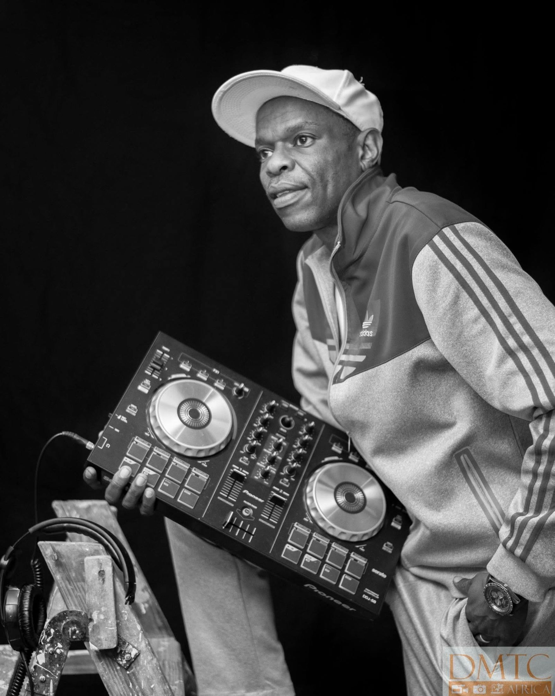
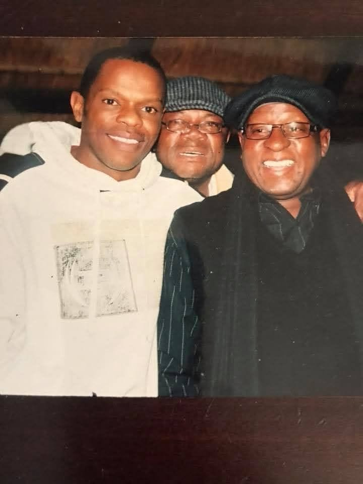
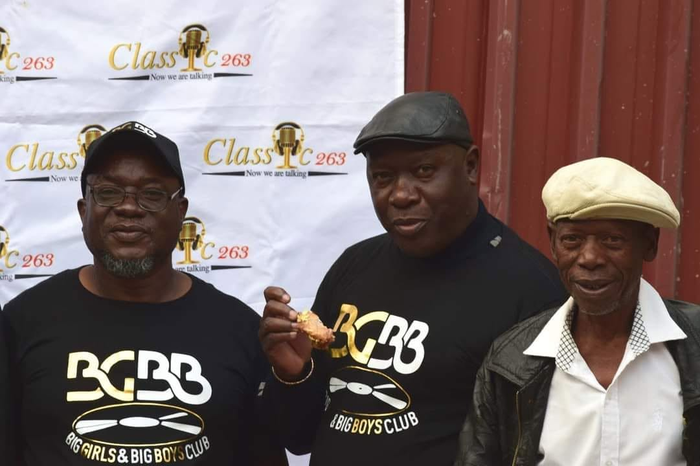
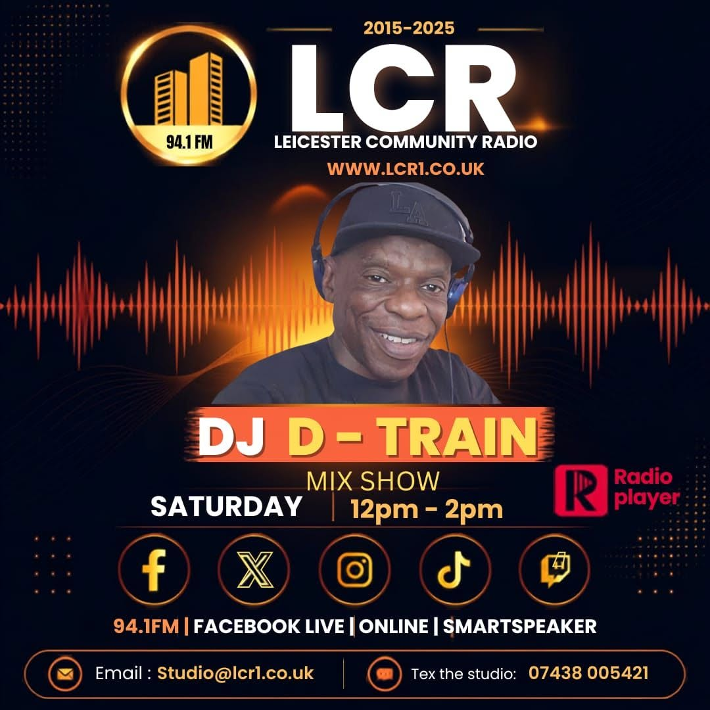
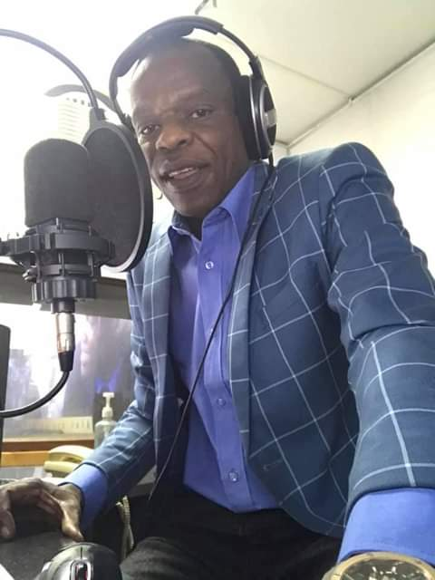
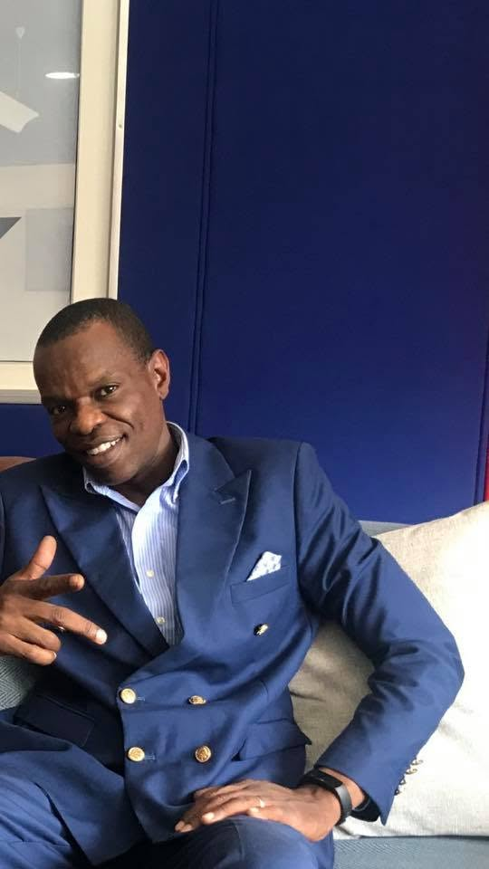

Oliver Mtukudzi & Ringo Madlingozi
D-Train and Witness “Chuman” Matema shared MC duties at the show Ronald remembers as his biggest crowd.
Read D-Train’s account
Ronald Chiwanza
DJ · Radio presenter · MC
A little soul, a little jazz and the old skool that gets people on the floor.
Harare roots. Leicester based.
From the archive
From the Harare jazz circuit to the UK dance floor, these are some of the rooms and crowds that shaped D-Train’s sound.

D-Train and Witness “Chuman” Matema shared MC duties at the show Ronald remembers as his biggest crowd.
Read D-Train’s accountD-Train was on the late-night bill at Zimgold Green for HIFA.
View the festival programmeRonald led the live jazz programme at Residence on the Deck. Wheels of Steel DJs were also billed for the venue’s Whisky Party.
Read The Herald coverageD-Train handled playback for Tanga wekwa Sando’s set at the Harare festival.
Read The Standard’s reviewD-Train worked alongside MC Sox Soko at the Zimbabwe footballer’s book launch at Diaspora Insurance House.
Read The Herald coverage
A look at the welcome-back gathering for D-Train and the music community he helped bring together.
Watch the crowd reelOn air
From producing at 3FM to 18 years on SFM and Classic263, and now the D-Train Mix Show on Leicester Community Radio.



The man behind the decks
Ronald got his start in Zimbabwean radio as a producer at 3FM in 1995. He went on to present on SFM and Classic263 and spent years playing old skool sets with Huggies Entertainment.
Today, Wheels of Steel Entertainment brings that experience to DJ sets, event hosting and sound for weddings, parties and live events.
Tell us about your event